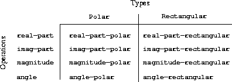

|
We have introduced data abstraction, a methodology for structuring systems in such a way that much of a program can be specified independent of the choices involved in implementing the data objects that the program manipulates. For example, we saw in section 2.1.1 how to separate the task of designing a program that uses rational numbers from the task of implementing rational numbers in terms of the computer language's primitive mechanisms for constructing compound data. The key idea was to erect an abstraction barrier – in this case, the selectors and constructors for rational numbers (make-rat, numer, denom) – that isolates the way rational numbers are used from their underlying representation in terms of list structure. A similar abstraction barrier isolates the details of the procedures that perform rational arithmetic (add-rat, sub-rat, mul-rat, and div-rat) from the “higher-level” procedures that use rational numbers. The resulting program has the structure shown in figure 2.1.
These data-abstraction barriers are powerful tools for controlling complexity. By isolating the underlying representations of data objects, we can divide the task of designing a large program into smaller tasks that can be performed separately. But this kind of data abstraction is not yet powerful enough, because it may not always make sense to speak of “the underlying representation” for a data object.
For one thing, there might be more than one useful representation for a data object, and we might like to design systems that can deal with multiple representations. To take a simple example, complex numbers may be represented in two almost equivalent ways: in rectangular form (real and imaginary parts) and in polar form (magnitude and angle). Sometimes rectangular form is more appropriate and sometimes polar form is more appropriate. Indeed, it is perfectly plausible to imagine a system in which complex numbers are represented in both ways, and in which the procedures for manipulating complex numbers work with either representation.
More importantly, programming systems are often designed by many people working over extended periods of time, subject to requirements that change over time. In such an environment, it is simply not possible for everyone to agree in advance on choices of data representation. So in addition to the data-abstraction barriers that isolate representation from use, we need abstraction barriers that isolate different design choices from each other and permit different choices to coexist in a single program. Furthermore, since large programs are often created by combining pre-existing modules that were designed in isolation, we need conventions that permit programmers to incorporate modules into larger systems additively, that is, without having to redesign or reimplement these modules.
In this section, we will learn how to cope with data that may be represented in different ways by different parts of a program. This requires constructing generic procedures – procedures that can operate on data that may be represented in more than one way. Our main technique for building generic procedures will be to work in terms of data objects that have type tags, that is, data objects that include explicit information about how they are to be processed. We will also discuss data-directed programming, a powerful and convenient implementation strategy for additively assembling systems with generic operations.
We begin with the simple complex-number example. We will see how type tags and data-directed style enable us to design separate rectangular and polar representations for complex numbers while maintaining the notion of an abstract “complex-number” data object. We will accomplish this by defining arithmetic procedures for complex numbers (add-complex, sub-complex, mul-complex, and div-complex) in terms of generic selectors that access parts of a complex number independent of how the number is represented. The resulting complex-number system, as shown in figure 2.19, contains two different kinds of abstraction barriers. The “horizontal” abstraction barriers play the same role as the ones in figure 2.1. They isolate “higher-level” operations from “lower-level” representations. In addition, there is a “vertical” barrier that gives us the ability to separately design and install alternative representations.
|
In section 2.5 we will show how to use type tags and data-directed style to develop a generic arithmetic package. This provides procedures (add, mul, and so on) that can be used to manipulate all sorts of “numbers” and can be easily extended when a new kind of number is needed. In section 2.5.3, we'll show how to use generic arithmetic in a system that performs symbolic algebra.
We will develop a system that performs arithmetic operations on complex numbers as a simple but unrealistic example of a program that uses generic operations. We begin by discussing two plausible representations for complex numbers as ordered pairs: rectangular form (real part and imaginary part) and polar form (magnitude and angle).43 Section 2.4.2 will show how both representations can be made to coexist in a single system through the use of type tags and generic operations.
Like rational numbers, complex numbers are naturally represented as ordered pairs. The set of complex numbers can be thought of as a two-dimensional space with two orthogonal axes, the “real” axis and the “imaginary” axis. (See figure 2.20.) From this point of view, the complex number z = x + iy (where i2 = - 1) can be thought of as the point in the plane whose real coordinate is x and whose imaginary coordinate is y. Addition of complex numbers reduces in this representation to addition of coordinates:


When multiplying complex numbers, it is more natural to think in terms of representing a complex number in polar form, as a magnitude and an angle (r and A in figure 2.20). The product of two complex numbers is the vector obtained by stretching one complex number by the length of the other and then rotating it through the angle of the other:


Thus, there are two different representations for complex numbers, which are appropriate for different operations. Yet, from the viewpoint of someone writing a program that uses complex numbers, the principle of data abstraction suggests that all the operations for manipulating complex numbers should be available regardless of which representation is used by the computer. For example, it is often useful to be able to find the magnitude of a complex number that is specified by rectangular coordinates. Similarly, it is often useful to be able to determine the real part of a complex number that is specified by polar coordinates.
 |
To design such a system, we can follow the same data-abstraction strategy we followed in designing the rational-number package in section 2.1.1. Assume that the operations on complex numbers are implemented in terms of four selectors: real-part, imag-part, magnitude, and angle. Also assume that we have two procedures for constructing complex numbers: make-from-real-imag returns a complex number with specified real and imaginary parts, and make-from-mag-ang returns a complex number with specified magnitude and angle. These procedures have the property that, for any complex number z, both
(make-from-real-imag (real-part z) (imag-part z))
and
(make-from-mag-ang (magnitude z) (angle z))
produce complex numbers that are equal to z.
Using these constructors and selectors, we can implement arithmetic on complex numbers using the “abstract data” specified by the constructors and selectors, just as we did for rational numbers in section 2.1.1. As shown in the formulas above, we can add and subtract complex numbers in terms of real and imaginary parts while multiplying and dividing complex numbers in terms of magnitudes and angles:
(define (add-complex z1 z2)
(make-from-real-imag (+ (real-part z1) (real-part z2))
(+ (imag-part z1) (imag-part z2))))
(define (sub-complex z1 z2)
(make-from-real-imag (- (real-part z1) (real-part z2))
(- (imag-part z1) (imag-part z2))))
(define (mul-complex z1 z2)
(make-from-mag-ang (* (magnitude z1) (magnitude z2))
(+ (angle z1) (angle z2))))
(define (div-complex z1 z2)
(make-from-mag-ang (/ (magnitude z1) (magnitude z2))
(- (angle z1) (angle z2))))
To complete the complex-number package, we must choose a representation and we must implement the constructors and selectors in terms of primitive numbers and primitive list structure. There are two obvious ways to do this: We can represent a complex number in “rectangular form” as a pair (real part, imaginary part) or in “polar form” as a pair (magnitude, angle). Which shall we choose?
In order to make the different choices concrete, imagine that there are two programmers, Ben Bitdiddle and Alyssa P. Hacker, who are independently designing representations for the complex-number system. Ben chooses to represent complex numbers in rectangular form. With this choice, selecting the real and imaginary parts of a complex number is straightforward, as is constructing a complex number with given real and imaginary parts. To find the magnitude and the angle, or to construct a complex number with a given magnitude and angle, he uses the trigonometric relations

which relate the real and imaginary parts (x, y) to the magnitude and the angle (r, A).44 Ben's representation is therefore given by the following selectors and constructors:
(define (real-part z) (car z))
(define (imag-part z) (cdr z))
(define (magnitude z)
(sqrt (+ (square (real-part z)) (square (imag-part z)))))
(define (angle z)
(atan (imag-part z) (real-part z)))
(define (make-from-real-imag x y) (cons x y))
(define (make-from-mag-ang r a)
(cons (* r (cos a)) (* r (sin a))))
Alyssa, in contrast, chooses to represent complex numbers in polar form. For her, selecting the magnitude and angle is straightforward, but she has to use the trigonometric relations to obtain the real and imaginary parts. Alyssa's representation is:
(define (real-part z)
(* (magnitude z) (cos (angle z))))
(define (imag-part z)
(* (magnitude z) (sin (angle z))))
(define (magnitude z) (car z))
(define (angle z) (cdr z))
(define (make-from-real-imag x y)
(cons (sqrt (+ (square x) (square y)))
(atan y x)))
(define (make-from-mag-ang r a) (cons r a))
The discipline of data abstraction ensures that the same implementation of add-complex, sub-complex, mul-complex, and div-complex will work with either Ben's representation or Alyssa's representation.
One way to view data abstraction is as an application of the “principle of least commitment.” In implementing the complex-number system in section 2.4.1, we can use either Ben's rectangular representation or Alyssa's polar representation. The abstraction barrier formed by the selectors and constructors permits us to defer to the last possible moment the choice of a concrete representation for our data objects and thus retain maximum flexibility in our system design.
The principle of least commitment can be carried to even further extremes. If we desire, we can maintain the ambiguity of representation even after we have designed the selectors and constructors, and elect to use both Ben's representation and Alyssa's representation. If both representations are included in a single system, however, we will need some way to distinguish data in polar form from data in rectangular form. Otherwise, if we were asked, for instance, to find the magnitude of the pair (3,4), we wouldn't know whether to answer 5 (interpreting the number in rectangular form) or 3 (interpreting the number in polar form). A straightforward way to accomplish this distinction is to include a type tag – the symbol rectangular or polar – as part of each complex number. Then when we need to manipulate a complex number we can use the tag to decide which selector to apply.
In order to manipulate tagged data, we will assume that we have procedures type-tag and contents that extract from a data object the tag and the actual contents (the polar or rectangular coordinates, in the case of a complex number). We will also postulate a procedure attach-tag that takes a tag and contents and produces a tagged data object. A straightforward way to implement this is to use ordinary list structure:
(define (attach-tag type-tag contents)
(cons type-tag contents))
(define (type-tag datum)
(if (pair? datum)
(car datum)
(error "Bad tagged datum -- TYPE-TAG" datum)))
(define (contents datum)
(if (pair? datum)
(cdr datum)
(error "Bad tagged datum -- CONTENTS" datum)))
Using these procedures, we can define predicates rectangular? and polar?, which recognize polar and rectangular numbers, respectively:
(define (rectangular? z)
(eq? (type-tag z) 'rectangular))
(define (polar? z)
(eq? (type-tag z) 'polar))
With type tags, Ben and Alyssa can now modify their code so that their two different representations can coexist in the same system. Whenever Ben constructs a complex number, he tags it as rectangular. Whenever Alyssa constructs a complex number, she tags it as polar. In addition, Ben and Alyssa must make sure that the names of their procedures do not conflict. One way to do this is for Ben to append the suffix rectangular to the name of each of his representation procedures and for Alyssa to append polar to the names of hers. Here is Ben's revised rectangular representation from section 2.4.1:
(define (real-part-rectangular z) (car z))
(define (imag-part-rectangular z) (cdr z))
(define (magnitude-rectangular z)
(sqrt (+ (square (real-part-rectangular z))
(square (imag-part-rectangular z)))))
(define (angle-rectangular z)
(atan (imag-part-rectangular z)
(real-part-rectangular z)))
(define (make-from-real-imag-rectangular x y)
(attach-tag 'rectangular (cons x y)))
(define (make-from-mag-ang-rectangular r a)
(attach-tag 'rectangular
(cons (* r (cos a)) (* r (sin a)))))
and here is Alyssa's revised polar representation:
(define (real-part-polar z)
(* (magnitude-polar z) (cos (angle-polar z))))
(define (imag-part-polar z)
(* (magnitude-polar z) (sin (angle-polar z))))
(define (magnitude-polar z) (car z))
(define (angle-polar z) (cdr z))
(define (make-from-real-imag-polar x y)
(attach-tag 'polar
(cons (sqrt (+ (square x) (square y)))
(atan y x))))
(define (make-from-mag-ang-polar r a)
(attach-tag 'polar (cons r a)))
Each generic selector is implemented as a procedure that checks the tag of its argument and calls the appropriate procedure for handling data of that type. For example, to obtain the real part of a complex number, real-part examines the tag to determine whether to use Ben's real-part-rectangular or Alyssa's real-part-polar. In either case, we use contents to extract the bare, untagged datum and send this to the rectangular or polar procedure as required:
(define (real-part z)
(cond ((rectangular? z)
(real-part-rectangular (contents z)))
((polar? z)
(real-part-polar (contents z)))
(else (error "Unknown type -- REAL-PART" z))))
(define (imag-part z)
(cond ((rectangular? z)
(imag-part-rectangular (contents z)))
((polar? z)
(imag-part-polar (contents z)))
(else (error "Unknown type -- IMAG-PART" z))))
(define (magnitude z)
(cond ((rectangular? z)
(magnitude-rectangular (contents z)))
((polar? z)
(magnitude-polar (contents z)))
(else (error "Unknown type -- MAGNITUDE" z))))
(define (angle z)
(cond ((rectangular? z)
(angle-rectangular (contents z)))
((polar? z)
(angle-polar (contents z)))
(else (error "Unknown type -- ANGLE" z))))
To implement the complex-number arithmetic operations, we can use the same procedures add-complex, sub-complex, mul-complex, and div-complex from section 2.4.1, because the selectors they call are generic, and so will work with either representation. For example, the procedure add-complex is still
(define (add-complex z1 z2)
(make-from-real-imag (+ (real-part z1) (real-part z2))
(+ (imag-part z1) (imag-part z2))))
Finally, we must choose whether to construct complex numbers using Ben's representation or Alyssa's representation. One reasonable choice is to construct rectangular numbers whenever we have real and imaginary parts and to construct polar numbers whenever we have magnitudes and angles:
(define (make-from-real-imag x y)
(make-from-real-imag-rectangular x y))
(define (make-from-mag-ang r a)
(make-from-mag-ang-polar r a))
The resulting complex-number system has the structure shown in figure 2.21. The system has been decomposed into three relatively independent parts: the complex-number-arithmetic operations, Alyssa's polar implementation, and Ben's rectangular implementation. The polar and rectangular implementations could have been written by Ben and Alyssa working separately, and both of these can be used as underlying representations by a third programmer implementing the complex-arithmetic procedures in terms of the abstract constructor/selector interface.
Since each data object is tagged with its type, the selectors operate on the data in a generic manner. That is, each selector is defined to have a behavior that depends upon the particular type of data it is applied to. Notice the general mechanism for interfacing the separate representations: Within a given representation implementation (say, Alyssa's polar package) a complex number is an untyped pair (magnitude, angle). When a generic selector operates on a number of polar type, it strips off the tag and passes the contents on to Alyssa's code. Conversely, when Alyssa constructs a number for general use, she tags it with a type so that it can be appropriately recognized by the higher-level procedures. This discipline of stripping off and attaching tags as data objects are passed from level to level can be an important organizational strategy, as we shall see in section 2.5.
The general strategy of checking the type of a datum and calling an appropriate procedure is called dispatching on type. This is a powerful strategy for obtaining modularity in system design. On the other hand, implementing the dispatch as in section 2.4.2 has two significant weaknesses. One weakness is that the generic interface procedures (real-part, imag-part, magnitude, and angle) must know about all the different representations. For instance, suppose we wanted to incorporate a new representation for complex numbers into our complex-number system. We would need to identify this new representation with a type, and then add a clause to each of the generic interface procedures to check for the new type and apply the appropriate selector for that representation.
Another weakness of the technique is that even though the individual representations can be designed separately, we must guarantee that no two procedures in the entire system have the same name. This is why Ben and Alyssa had to change the names of their original procedures from section 2.4.1.
The issue underlying both of these weaknesses is that the technique for implementing generic interfaces is not additive. The person implementing the generic selector procedures must modify those procedures each time a new representation is installed, and the people interfacing the individual representations must modify their code to avoid name conflicts. In each of these cases, the changes that must be made to the code are straightforward, but they must be made nonetheless, and this is a source of inconvenience and error. This is not much of a problem for the complex-number system as it stands, but suppose there were not two but hundreds of different representations for complex numbers. And suppose that there were many generic selectors to be maintained in the abstract-data interface. Suppose, in fact, that no one programmer knew all the interface procedures or all the representations. The problem is real and must be addressed in such programs as large-scale data-base-management systems.
What we need is a means for modularizing the system design even further. This is provided by the programming technique known as data-directed programming. To understand how data-directed programming works, begin with the observation that whenever we deal with a set of generic operations that are common to a set of different types we are, in effect, dealing with a two-dimensional table that contains the possible operations on one axis and the possible types on the other axis. The entries in the table are the procedures that implement each operation for each type of argument presented. In the complex-number system developed in the previous section, the correspondence between operation name, data type, and actual procedure was spread out among the various conditional clauses in the generic interface procedures. But the same information could have been organized in a table, as shown in figure 2.22.
Data-directed programming is the technique of designing programs to work with such a table directly. Previously, we implemented the mechanism that interfaces the complex-arithmetic code with the two representation packages as a set of procedures that each perform an explicit dispatch on type. Here we will implement the interface as a single procedure that looks up the combination of the operation name and argument type in the table to find the correct procedure to apply, and then applies it to the contents of the argument. If we do this, then to add a new representation package to the system we need not change any existing procedures; we need only add new entries to the table.
|  |
To implement this plan, assume that we have two procedures, put and get, for manipulating the operation-and-type table:
For now, we can assume that put and get are included in our language. In chapter 3 (section 3.3.3, exercise 3.24) we will see how to implement these and other operations for manipulating tables.
Here is how data-directed programming can be used in the complex-number system. Ben, who developed the rectangular representation, implements his code just as he did originally. He defines a collection of procedures, or a package, and interfaces these to the rest of the system by adding entries to the table that tell the system how to operate on rectangular numbers. This is accomplished by calling the following procedure:
(define (install-rectangular-package)
;; internal procedures
(define (real-part z) (car z))
(define (imag-part z) (cdr z))
(define (make-from-real-imag x y) (cons x y))
(define (magnitude z)
(sqrt (+ (square (real-part z))
(square (imag-part z)))))
(define (angle z)
(atan (imag-part z) (real-part z)))
(define (make-from-mag-ang r a)
(cons (* r (cos a)) (* r (sin a))))
;; interface to the rest of the system
(define (tag x) (attach-tag 'rectangular x))
(put 'real-part '(rectangular) real-part)
(put 'imag-part '(rectangular) imag-part)
(put 'magnitude '(rectangular) magnitude)
(put 'angle '(rectangular) angle)
(put 'make-from-real-imag 'rectangular
(lambda (x y) (tag (make-from-real-imag x y))))
(put 'make-from-mag-ang 'rectangular
(lambda (r a) (tag (make-from-mag-ang r a))))
'done)
Notice that the internal procedures here are the same procedures from section 2.4.1 that Ben wrote when he was working in isolation. No changes are necessary in order to interface them to the rest of the system. Moreover, since these procedure definitions are internal to the installation procedure, Ben needn't worry about name conflicts with other procedures outside the rectangular package. To interface these to the rest of the system, Ben installs his real-part procedure under the operation name real-part and the type (rectangular), and similarly for the other selectors.45 The interface also defines the constructors to be used by the external system.46 These are identical to Ben's internally defined constructors, except that they attach the tag.
Alyssa's polar package is analogous:
(define (install-polar-package)
;; internal procedures
(define (magnitude z) (car z))
(define (angle z) (cdr z))
(define (make-from-mag-ang r a) (cons r a))
(define (real-part z)
(* (magnitude z) (cos (angle z))))
(define (imag-part z)
(* (magnitude z) (sin (angle z))))
(define (make-from-real-imag x y)
(cons (sqrt (+ (square x) (square y)))
(atan y x)))
;; interface to the rest of the system
(define (tag x) (attach-tag 'polar x))
(put 'real-part '(polar) real-part)
(put 'imag-part '(polar) imag-part)
(put 'magnitude '(polar) magnitude)
(put 'angle '(polar) angle)
(put 'make-from-real-imag 'polar
(lambda (x y) (tag (make-from-real-imag x y))))
(put 'make-from-mag-ang 'polar
(lambda (r a) (tag (make-from-mag-ang r a))))
'done)
Even though Ben and Alyssa both still use their original procedures defined with the same names as each other's (e.g., real-part), these definitions are now internal to different procedures (see section 1.1.8), so there is no name conflict.
The complex-arithmetic selectors access the table by means of a general “operation” procedure called apply-generic, which applies a generic operation to some arguments. Apply-generic looks in the table under the name of the operation and the types of the arguments and applies the resulting procedure if one is present:47
(define (apply-generic op . args)
(let ((type-tags (map type-tag args)))
(let ((proc (get op type-tags)))
(if proc
(apply proc (map contents args))
(error
"No method for these types -- APPLY-GENERIC"
(list op type-tags))))))
Using apply-generic, we can define our generic selectors as follows:
(define (real-part z) (apply-generic 'real-part z))
(define (imag-part z) (apply-generic 'imag-part z))
(define (magnitude z) (apply-generic 'magnitude z))
(define (angle z) (apply-generic 'angle z))
Observe that these do not change at all if a new representation is added to the system.
We can also extract from the table the constructors to be used by the programs external to the packages in making complex numbers from real and imaginary parts and from magnitudes and angles. As in section 2.4.2, we construct rectangular numbers whenever we have real and imaginary parts, and polar numbers whenever we have magnitudes and angles:
(define (make-from-real-imag x y)
((get 'make-from-real-imag 'rectangular) x y))
(define (make-from-mag-ang r a)
((get 'make-from-mag-ang 'polar) r a))
Exercise 2.73. Section 2.3.2 described a program that performs symbolic differentiation:
(define (deriv exp var)
(cond ((number? exp) 0)
((variable? exp) (if (same-variable? exp var) 1 0))
((sum? exp)
(make-sum (deriv (addend exp) var)
(deriv (augend exp) var)))
((product? exp)
(make-sum
(make-product (multiplier exp)
(deriv (multiplicand exp) var))
(make-product (deriv (multiplier exp) var)
(multiplicand exp))))
<more rules can be added here>
(else (error "unknown expression type -- DERIV" exp))))
We can regard this program as performing a dispatch on the type of the expression to be differentiated. In this situation the “type tag” of the datum is the algebraic operator symbol (such as +) and the operation being performed is deriv. We can transform this program into data-directed style by rewriting the basic derivative procedure as
(define (deriv exp var)
(cond ((number? exp) 0)
((variable? exp) (if (same-variable? exp var) 1 0))
(else ((get 'deriv (operator exp)) (operands exp)
var))))
(define (operator exp) (car exp))
(define (operands exp) (cdr exp))
a. Explain what was done above. Why can't we assimilate the predicates number? and same-variable? into the data-directed dispatch?
b. Write the procedures for derivatives of sums and products, and the auxiliary code required to install them in the table used by the program above.
c. Choose any additional differentiation rule that you like, such as the one for exponents (exercise 2.56), and install it in this data-directed system.
d. In this simple algebraic manipulator the type of an expression is the algebraic operator that binds it together. Suppose, however, we indexed the procedures in the opposite way, so that the dispatch line in deriv looked like
((get (operator exp) 'deriv) (operands exp) var)
What corresponding changes to the derivative system are required?
Exercise 2.74. Insatiable Enterprises, Inc., is a highly decentralized conglomerate company consisting of a large number of independent divisions located all over the world. The company's computer facilities have just been interconnected by means of a clever network-interfacing scheme that makes the entire network appear to any user to be a single computer. Insatiable's president, in her first attempt to exploit the ability of the network to extract administrative information from division files, is dismayed to discover that, although all the division files have been implemented as data structures in Scheme, the particular data structure used varies from division to division. A meeting of division managers is hastily called to search for a strategy to integrate the files that will satisfy headquarters' needs while preserving the existing autonomy of the divisions.
Show how such a strategy can be implemented with data-directed programming. As an example, suppose that each division's personnel records consist of a single file, which contains a set of records keyed on employees' names. The structure of the set varies from division to division. Furthermore, each employee's record is itself a set (structured differently from division to division) that contains information keyed under identifiers such as address and salary. In particular:
a. Implement for headquarters a get-record procedure that retrieves a specified employee's record from a specified personnel file. The procedure should be applicable to any division's file. Explain how the individual divisions' files should be structured. In particular, what type information must be supplied?
b. Implement for headquarters a get-salary procedure that returns the salary information from a given employee's record from any division's personnel file. How should the record be structured in order to make this operation work?
c. Implement for headquarters a find-employee-record procedure. This should search all the divisions' files for the record of a given employee and return the record. Assume that this procedure takes as arguments an employee's name and a list of all the divisions' files.
d. When Insatiable takes over a new company, what changes must be made in order to incorporate the new personnel information into the central system?
The key idea of data-directed programming is to handle generic operations in programs by dealing explicitly with operation-and-type tables, such as the table in figure 2.22. The style of programming we used in section 2.4.2 organized the required dispatching on type by having each operation take care of its own dispatching. In effect, this decomposes the operation-and-type table into rows, with each generic operation procedure representing a row of the table.
An alternative implementation strategy is to decompose the table into columns and, instead of using “intelligent operations” that dispatch on data types, to work with “intelligent data objects” that dispatch on operation names. We can do this by arranging things so that a data object, such as a rectangular number, is represented as a procedure that takes as input the required operation name and performs the operation indicated. In such a discipline, make-from-real-imag could be written as
(define (make-from-real-imag x y)
(define (dispatch op)
(cond ((eq? op 'real-part) x)
((eq? op 'imag-part) y)
((eq? op 'magnitude)
(sqrt (+ (square x) (square y))))
((eq? op 'angle) (atan y x))
(else
(error "Unknown op -- MAKE-FROM-REAL-IMAG" op))))
dispatch)
The corresponding apply-generic procedure, which applies a generic operation to an argument, now simply feeds the operation's name to the data object and lets the object do the work:48
(define (apply-generic op arg) (arg op))
Note that the value returned by make-from-real-imag is a procedure – the internal dispatch procedure. This is the procedure that is invoked when apply-generic requests an operation to be performed.
This style of programming is called message passing. The name comes from the image that a data object is an entity that receives the requested operation name as a “message.” We have already seen an example of message passing in section 2.1.3, where we saw how cons, car, and cdr could be defined with no data objects but only procedures. Here we see that message passing is not a mathematical trick but a useful technique for organizing systems with generic operations. In the remainder of this chapter we will continue to use data-directed programming, rather than message passing, to discuss generic arithmetic operations. In chapter 3 we will return to message passing, and we will see that it can be a powerful tool for structuring simulation programs.
Exercise 2.75. Implement the constructor make-from-mag-ang in message-passing style. This procedure should be analogous to the make-from-real-imag procedure given above.
Exercise 2.76. As a large system with generic operations evolves, new types of data objects or new operations may be needed. For each of the three strategies – generic operations with explicit dispatch, data-directed style, and message-passing-style – describe the changes that must be made to a system in order to add new types or new operations. Which organization would be most appropriate for a system in which new types must often be added? Which would be most appropriate for a system in which new operations must often be added?
43 In actual computational systems, rectangular form is preferable to polar form most of the time because of roundoff errors in conversion between rectangular and polar form. This is why the complex-number example is unrealistic. Nevertheless, it provides a clear illustration of the design of a system using generic operations and a good introduction to the more substantial systems to be developed later in this chapter.
44 The arctangent function referred to here, computed by Scheme's atan procedure, is defined so as to take two arguments y and x and to return the angle whose tangent is y/x. The signs of the arguments determine the quadrant of the angle.
45 We use the list (rectangular) rather than the symbol rectangular to allow for the possibility of operations with multiple arguments, not all of the same type.
46 The type the constructors are installed under needn't be a list because a constructor is always used to make an object of one particular type.
47 Apply-generic uses the dotted-tail notation described in exercise 2.20, because different generic operations may take different numbers of arguments. In apply-generic, op has as its value the first argument to apply-generic and args has as its value a list of the remaining arguments.
Apply-generic also uses the primitive procedure apply, which takes two arguments, a procedure and a list. Apply applies the procedure, using the elements in the list as arguments. For example,
(apply + (list 1 2 3 4))
returns 10.
48 One limitation of this organization is it permits only generic procedures of one argument.